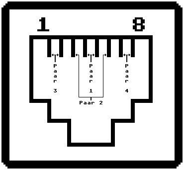

Previous
Next
TOC
Falls mal die Adern vertauscht werden an einer RJ45 Buchse, sollte
das eigentlich nicht schlimm sein. Die Sende- und Empfangsleitungen
scheinen polarit‰tsunabh‰ngig zu sein - sprich:
Die Adern eines Paares kann man ohne negative Folgen drehen.
Paarkennung
Stiftnummer
Farbe/Kennfaden
Transmit 1
5
Weifl/Blau
Receive 1
4
Blau/Weifl
Transmit 2
3
Weifl/Orange
Receive 2
6
Orange/Weifl
Transmit 3
1
Weifl/Gr¸n
Receive 3
2
Gr¸n/Weifl
Transmit 4
7
Weifl/Braun
Receive 4
8
Brain/Weifl

Kapitel IEEE 802.3 (10BaseT), Seite 4